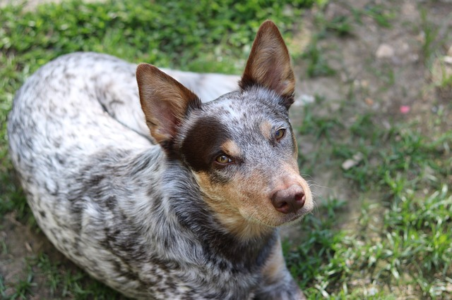
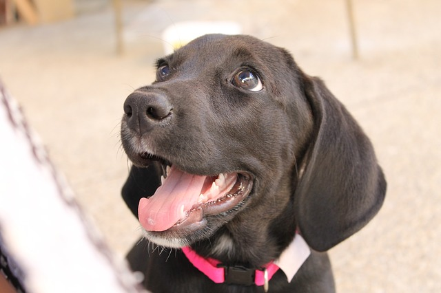
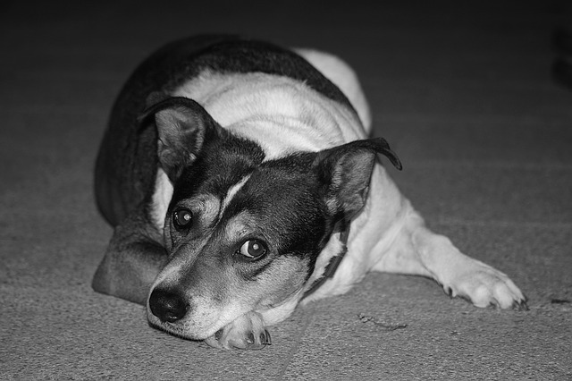
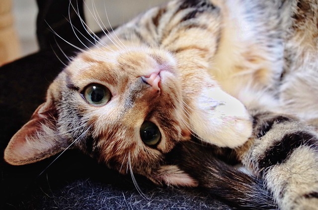
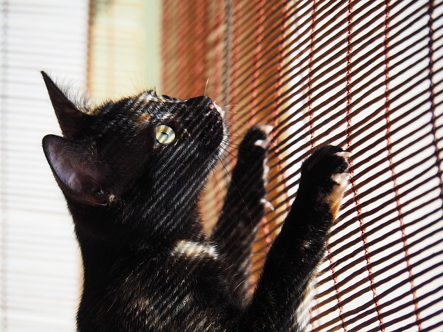
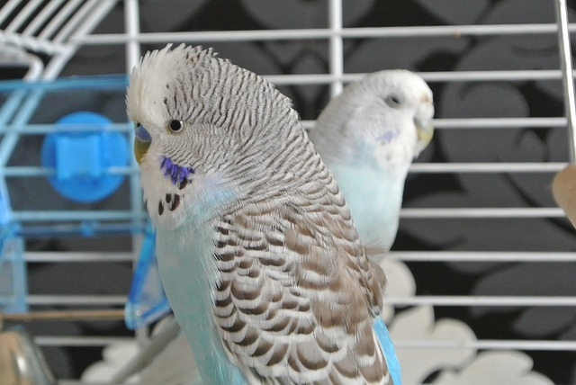
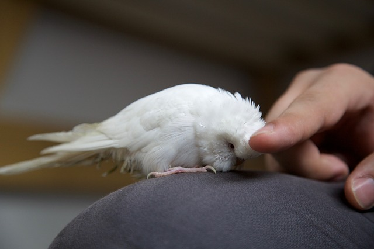
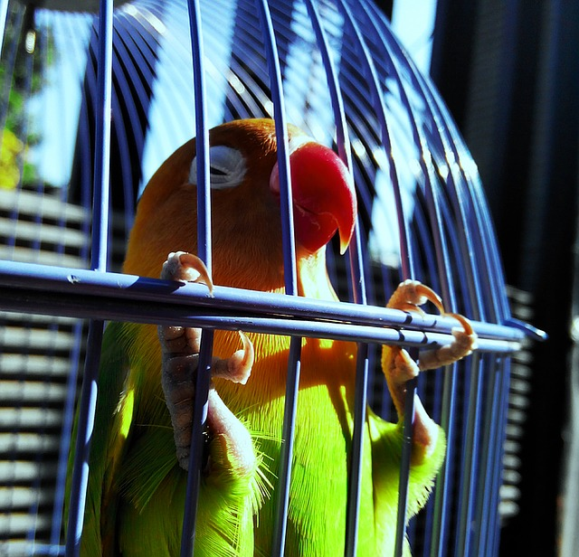

Get to know some of the furry, feline, and feathery friends that are up for adoption at Echo.org and another 10,000 pets that need a home with a loving and caring individual or family.
| Animals for Adoption | ||
|---|---|---|
| Dogs | ||
|
 Name: Jellybean Age: 4 Jellybean is a spirited lady dog who has a lot of love to give. No doublt that she is one of the smartest dogs looking for a home; Jellybean is trained to use the toilet! Contact us and stop by to schedule a play date with Jellybean! |
 Name: Phillip Age: 6 This brown eyed goofball is well mannered and can entertain himself for hours. Phillip is allergic to chicken but otherwise he is a fun and no-fuss eater. Contact us and stop by to schedule a play date with Phillip! |
 Name: Bingo Age: 8 This quiet lump of love loves to sit and watch Top Chef and House Hunters for hours! Bingo is also great with children and loves to show affection. Contact us and stop by to schedule a play date with Bingo! |
Cats |
 Name: Mini and Mimi Age: 5 Weeks Mini and Mimi are two kitten sisters looking for a home. They are 5 weeks old and ready to warm some hearts. We prefer not to separate the pair but applicants will be judged on a case by case bases. |
 Name: Abby Age: 12 Abby is a 12 year old little lady looking for roommate. This cool cat is no nonsense and all business. Cuddles are mandatory and a steady flow of love is required. Contact us to schedule a play date with Abby! |
 Name: Pouncy Age: 9 He loves to stretch his paws and go on his little adventures. Time to time he will bring you his spoils of war as he proudly displays his superior hunting skills. Nevertheless, Pouncy is great with young children and loves to goof around. |
| Birds | ||
|
 Name: Gregor and Ethel Age: 10 Gregor and Ethel are just two lovers trying to make the best of lot in life. They can get a bit rowdy, as lovers tend to quarrel, but at the end of the day they always come together. Gregor and Ethel are only available for adoption in pairs, no exceptions. |
 Name: Duke Age: 15 Duke is a baby bird wanting to make a mark on the world. He is intelligent and fun to play with. Contact us to schedule a play date with Duke. |
 Name: Didi Age: 3 Didi is a rebellious feathery firecracker. She is full of personality and a notorious chatty-kathy. We promise she will make you laugh or your money back! Contact us to schedule a plau date with Didi. |